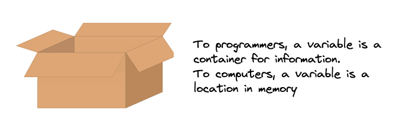
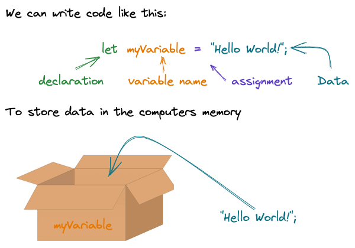
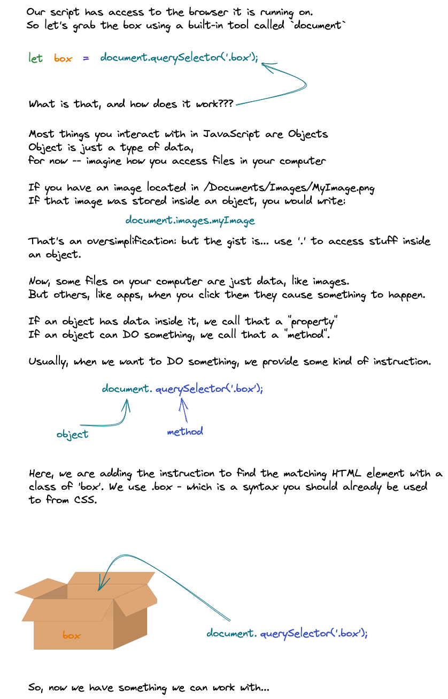

Variables
Let's write some code that uses the built-in tools from the browser to grab that div with the class of box and change its background color to blue.
To do that, we need to use a variable.
What is a variable?
How do we use variables?
Ok.. But how do we get the box?
OK let me change the box already
querySelector gives us the box, but how do we change it?
We can use the style property to change the style of the box. We can change the background color by setting the backgroundColor property.